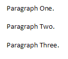
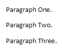

[Table of Contents] [docx version]
WordprocessingML Reference Material - Table of Contents
doNotUseHTMLParagraphAutoSpacing (Use Fixed Paragraph Spacing for HTML Auto Setting)
This element specifies whether applications should use a fixed definition when interpreting automatic paragraph spacing defined by a value of true (or equivalent) on the beforeAutospacing and/or afterAutospacing attributes on the spacing element (§2.3.1.33).
Typically, applications shall interpret these settings to match the behavior of most HTML user agents, mimicking the default spacing above and below an HTML p element without additional spacing information. This element, when present with a val attribute value of true (or equivalent), specifies that those two attributes shall result in the following settings for each value:
• beforeAutospacing = 5 points of spacing before
• afterAutospacing = 10 points of spacing after
[Example: Consider a WordprocessingML document with a three paragraphs using HTML autospacing, as follows:
<w:p>
<w:pPr>
<w:spacing w:beforeAutospacing="true" w:afterAutospacing="true" />
</w:pPr>
<w:r>
<w:t>Paragraph One</w:t>
</w:r>
</w:p>
<w:p>
<w:pPr>
<w:spacing w:beforeAutospacing="true" w:afterAutospacing="true" />
</w:pPr>
<w:r>
<w:t>Paragraph Two</w:t>
</w:r>
</w:p>
<w:p>
<w:pPr>
<w:spacing w:beforeAutospacing="true" w:afterAutospacing="true" />
</w:pPr>
<w:r>
<w:t>Paragraph Three</w:t>
</w:r>
</w:p>
The default presentation would result in output designed to match that of all common HTML user agents:

However, if this compatibility setting is turned on:
<w:compat>
<w:doNotUseHTMLParagraphAutoSpacing />
</w:compat>
Then the paragraphs will have exact spacing of 5 points before and 10 points after, resulting in the following output:

Notice that the paragraphs are more condensed in the second example. end example]
|
Parent Elements |
|
compat (§2.15.3.9) |
|
Attributes |
Description |
|
val (On/Off Value) |
Specifies a binary value for the property defined by the parent XML element.
A value of on, 1, or true specifies that the property shall be explicitly applied. This is the default value for this attribute, and is implied when the parent element is present, but this attribute is omitted.
A value of off, 0, or false specifies that the property shall be explicitly turned off.
[Example: For example, consider the following on/off property:
<w:… w:val="off"/>
The val attribute explicitly declares that the property is turned off. end example]
The possible values for this attribute are defined by the ST_OnOff simple type (§2.18.67). |
The following XML Schema fragment defines the contents of this element:
<complexType name="CT_OnOff">
<attribute name="val" type="ST_OnOff"/>
</complexType>